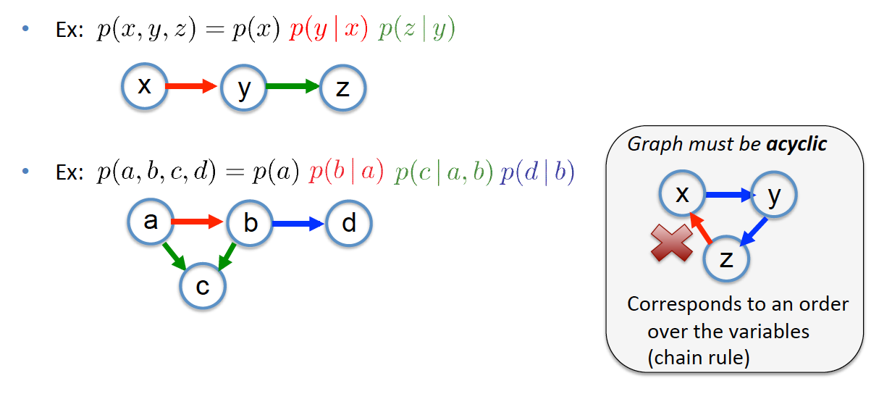
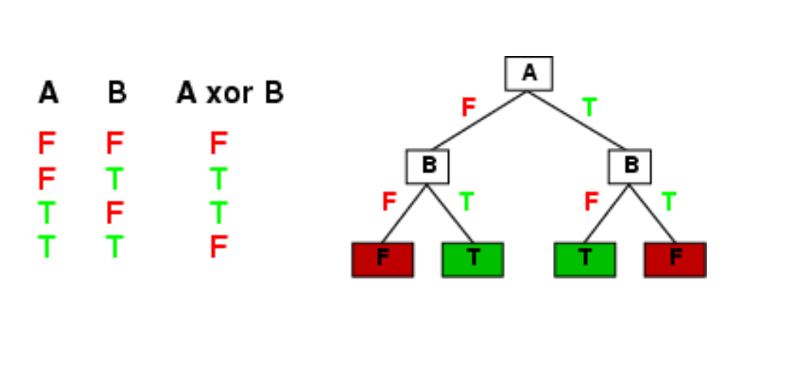

quiz 4
Probability
Axioms of probability:
- 0 <= P(a) <= 1
- P(NOT(a)) = 1 – P(a)
- P(true) = 1
- P(false) = 0
- P(A OR B) = P(A) + P(B) – P(A AND B)
Concepts of probability
And Probability
P(A,B)=P(A˄B)=P(A)+P(B)−P(A˅B)
Or Probability
P(A˅B)=P(A)+P(B)–P(A˄B)
Conditional Probability
P(A|B)=P(A,B)P(B)
Product Rule
- aka Chain Rule
- P(a,b)=P(a|b)P(b)=P(b|a)P(a)
Using Product Rule
P(a,b,c)=P(a,b|c)P(c)=P(a|b,c)P(b,c)
P(a,b,c|d,e)=P(a|b,c,d,e)P(b,c|d,e)
Sum Rule
- aka Law of Total Probability
P(A)=∑B,CP(A,B,C)
e.g.
P(b)=∑a∑c∑dP(a,b,c,d)
P(a,d)=∑b∑cP(a,b,c,d) - Given a set of probabilities P(CatchFish,Day,Lake)
- Where:
- CatchFish = {true, false}
- Day = {mon, tues, wed, thurs, fri, sat, sun}
- Lake = {buel lake, ralph lake, crystal lake}
– Need to find P(CatchFish = True): - P(CatchFish=true)=ΣdayΣlakeP(CatchFish=true,day,lake)
Bayes’ Rule
P(B|A)=P(A|B)P(B)P(A)
Derivation of Bayes’ Rule
Conditional Independence
- X, Y independent given Z
- p(X=x,Y=y|Z=z)=p(X=x|Z=z)p(Y=y|Z=z)
for all x,y,z - Equivalent: p(X|Y,Z)=p(X|Z)orp(Y|X,Z)=p(Y|Z)
- Intuition: X has no additional info about Y beyond Z’s
Bayesian Networks

Machine Learning
Important Concepts
- Learning: Improves performance of future tasks after observing the world
- Information Gain: Expected reduction in entropy from testing an attribute value
- Decision Boundary: Surface in a high-dimensional space that separates the classes
- Cross-validation: Randomly split the data into a training set and a test set
- Linear Classifier: Tests w⋅f>0, where w is a weight vector and f is a feature vector
- Factored Representation (Feature Vector): Fixed set, list, or vector of features/ attributes paired with a value
- Supervised Learning: Agent observes input-output pairs & learns to map input to output
- Test Set: Examples distinct from training set, used to estimate accuracy
- Naïve Bayes Classifier: Tests P(C)∏iP(Xi|C) Where C is a class label and Xi are features
- Classification: Supervised learning with a discrete set of possible output values
- Decision Tree: Internal nodes test a value of an attribute, leaf nodes=class labels
- Regression: Supervised learning with numeric output values
- Training Set: Example input-output pairs, from which to discover a hypothesis
- Unsupervised Learning: Agent learns patterns in the input with no explicit feedback
- Overfitting: Choose an over-complex model based on irrelevant data patterns
- Support Vector Machine: Current most-popular “off-the-shelf” supervised learning method.
True or False
True:
- A decision tree can learn and represent any Boolean function.
- Overfitting is a general phenomenon that occurs with most of all types of learners.
- An agent is learning if it improves its performance on future tasks after making observations about the world.
False:
- The information gain from an attribute A is how much classifier accuracy improves when attribute A is added to the example feature vectors in the training set.
- Cross-validation is a way to imrpove the accuracy of a learned hypothesis by reducing over-fitting using Ockham’s razor.
Decision Tree
